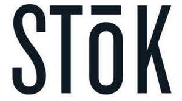

Trade Mark Journal No.2025/010 7 March 2025
UK00004165269 25 February 2025 (29,30,32)

- Class 29
- Milk and milk products; yogurt; cheese; dairy substitutes; milk substitutes; plant-based yogurt substitutes; plant-based non-dairy cheese substitutes; plant-based milk and milk products, namely milks derived from plants, vegetables, grains, nuts, seeds, beans and fruits; almond milk, cashew milk, coconut milk, hazelnut milk, nut milk, oat milk, peanut milk, rice milk, soy milk, all the aforementioned products being plain or flavored; cottage cheese; milk beverages, milk predominating; compotes; fruit-based snack foods; nut-based snack bars; seed-based snack bars; probiotic dairy-based snack bar; powdered milk; yogurt-based snack foods; fruit purees, non-dairy creamers; creamers for beverages; butter; eggs; Coffee creamers; Coffee cream in the form of powder; Milk-based beverages containing coffee.
- Class 30
- Coffee; tea; coffee-based beverages; tea-based beverages; iced tea; coffee substitutes; artificial coffee; coffee in brewed form; cold brew coffee; cold brew coffee concentrate; flavouring and sweetening syrups to add to coffee beverages; coffee drinks; mixtures of coffee; instant coffee; coffee concentrates; coffee extracts; coffee pods; iced coffee; caffeinated coffee shots; caffeinated concentrates for making coffee drinks; coffee beverages with milk; ice beverages with a coffee base; extracts of coffee for use as flavours in foodstuffs.
- Class 32
- Mineral water [beverages]; still or sparkling water (mineral or not); flavored waters (mineral or not); flavored drinks; fruit beverages and fruit juices; fruit or vegetable-based beverages; vegetable beverages and vegetable juices; non-alcoholic beverages; protein drinks; protein-enriched sports beverages; waters enriched with nutrients (not being for medical use); beverages enriched with additional minerals (not being for medical use); beverages enriched with added vitamins (not being for medical use); mineral-enriched non-alcoholic beverages; smoothies; lemonades; sodas; energy drinks; energy drinks containing caffeine; isotonic beverages; pastilles for effervescing beverages; powders for effervescing beverages; syrups and other preparations for making non-alcoholic beverages; non-alcoholic plant-based beverages; syrup for making lemonade; tonic water.
WhiteWave Services, Inc.
Representative: Stobbs